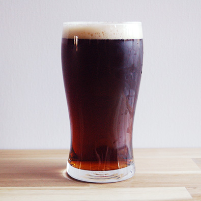

Bière De Noël 2017
ABV: 9%
Malts: Pilsner, Wheat, Special B, Crystal 75, Aromatic, Munich, Chocolate, Candy Sugar
Hops: First Gold (UK)
Yeast: La Chouffe
Serving: Bottle Conditioned
Description: This is hopefully going to be a yearly brew release before the holiday in the 9-10% range. Bottles will be cellared for future years tastings.
Tasting Notes:Thyme, orange peel, coriander. I pulled 1/2 gallon to boil down to syrup. Malty toffee notes with large spice on the finish. Touch of citrus and orange on the nose. Highly drinkable for a 9% beer with nice lacing on the glass. It's a dry beer with a touch of alchohol in the finish.